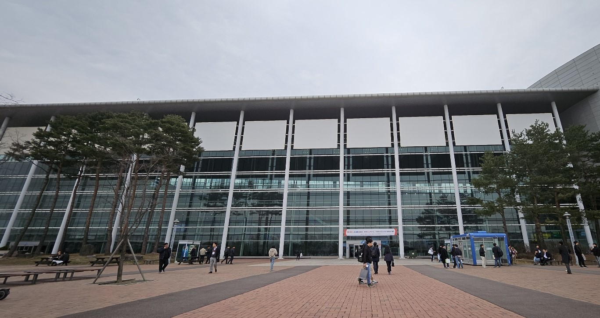
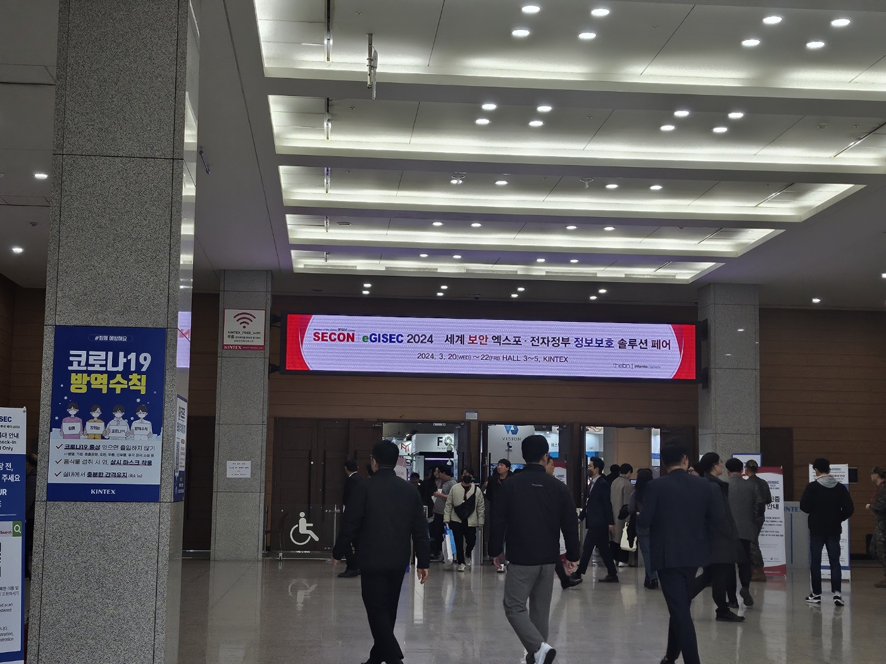
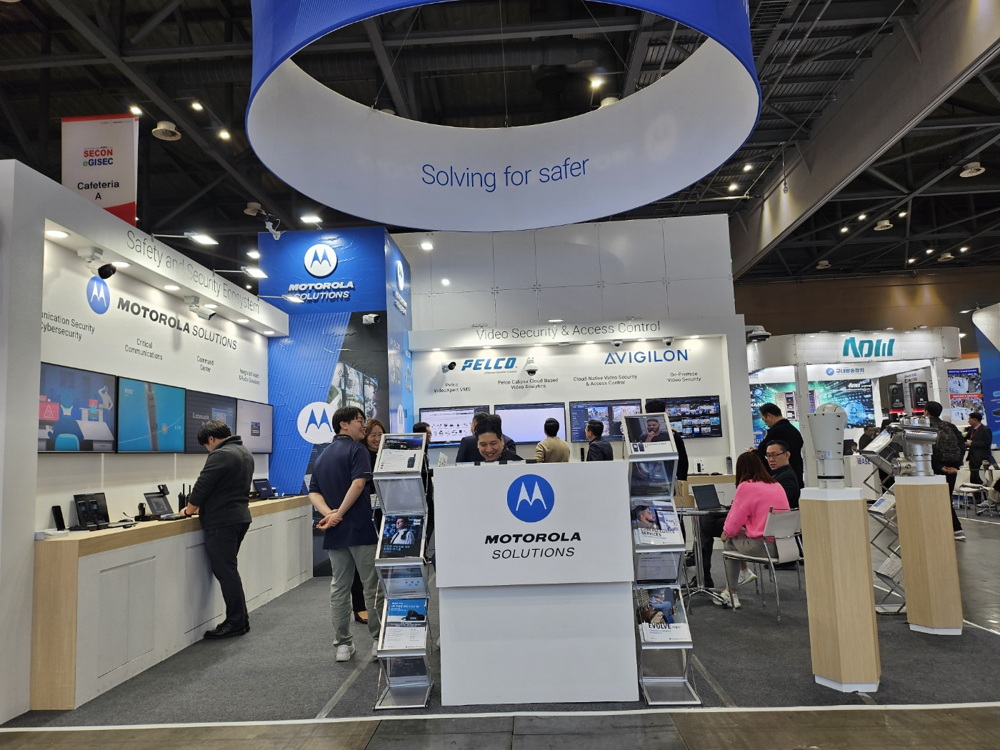
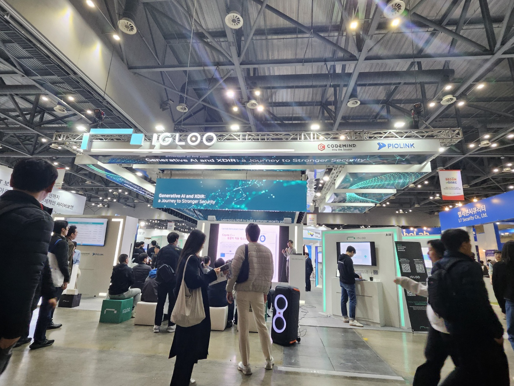
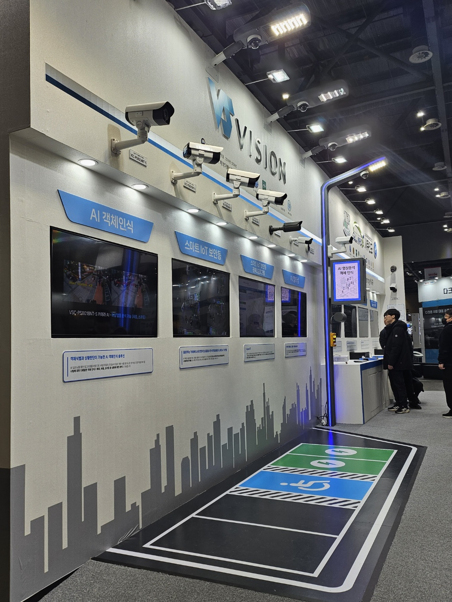
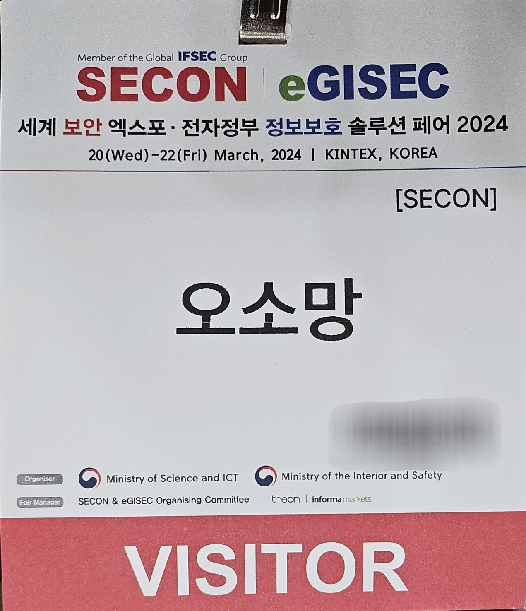

Secon 2024 Report
'세계 보안 엑스포 2024 | 전자정부 정보보호 솔루션 페어' 참관록
  
 
세계 보안 엑스포에 가는 것은 이번이 처음이었다. AI 기술을 기반으로 한 보안 관련 제품들이 가장 많았고, 그중에서 특히 AI 기술을 기반으로 사람의 상태를 분석하여 응급상황에 대처할 수 있게끔 하거나 화재, 지진 등의 상황을 실시간으로 감지하는 CCTV가 가장 많이 전시되어 있었다. 큰 부스에서는 주로 그런 제품들이 전시되어 있었고, 다닥다닥 붙어있는 작은 부스들에 전시되어 있는 제품들은 서로 다른 유형의 제품인 경우가 꽤 있었으나, 아무래도 부스의 규모에 따라 전시의 전반적인 퀄리티 차이가 나서 기억에 남는 것은 큰 부스의 비슷한 제품들 뿐이라는 점이 아쉬웠다. 다음 세계 보안 엑스포에서는 비슷한 유형의 제품을 가지고 있는 회사들을 그룹별로 나눠 큰 부스를 사용할 수 있는 개수를 제한하여 더 다양한 기술들과 제품들을 볼 수 있었으면 좋겠다는 생각이 들었다. 또한 커피 쿠폰이나 추첨 행사 등의 이벤트로 사람들의 주목을 끌기 보다는 사람들이 기술이나 제품에 더 주목할 수 있게끔 부스를 운영하는 것이 더 나을 것 같다는 생각이 들었다. 커피 쿠폰이나 추첨 선물을 받으려고 해당 부스에 들어가서 대충 보고 상품만 받아가는 사람들이 꽤 많이 보였기 때문이다. 상품 보다는 해당 기술이나 제품이 만들어지기까지 들었을 여러 사람들의 노력과 기술이나 제품의 가치에 사람들이 더 집중해주었으면 좋겠다는 생각이 들었다. 보안 관련 최신 트렌드를 알거나, 현재 뜨고 있는, 또는 미래 가치가 보이는 새로운 기술이나 제품들을 알아가거나, 실제로 보면서 생생하게 공부를 해 볼 수 있는 기회가 되는 등의 것들이 세계 보안 엑스포의 진정한 목적이라고 생각되기 때문이다. 책이나 영상으로 접하던 보안 관련 기술이나 제품들을 직접 눈으로 보고 설명까지 들으니 보안이라는 것에 대해 더 깊은 관심과 흥미가 생긴 것 같아 앞으로의 나의 발전과 성장에 동기부여가 될 하나의 경험이 된 것 같다. 다음 세계 보안 엑스포는 어떤 모습일지 기대된다.